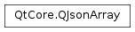

QJsonArray¶
Synopsis¶
Functions¶
- def
__add__(v) - def
__eq__(other) - def
__iadd__(v) - def
__lshift__(v) - def
__ne__(other) - def
append(value) - def
at(i) - def
contains(element) - def
count() - def
empty() - def
first() - def
insert(i, value) - def
isEmpty() - def
last() - def
operator[](i) - def
pop_back() - def
pop_front() - def
prepend(value) - def
push_back(t) - def
push_front(t) - def
removeAt(i) - def
removeFirst() - def
removeLast() - def
replace(i, value) - def
size() - def
swap(other) - def
takeAt(i) - def
toVariantList()
Static functions¶
- def
fromStringList(list) - def
fromVariantList(list)
Detailed Description¶
The
PySide2.QtCore.QJsonArrayclass encapsulates a JSON array.A JSON array is a list of values. The list can be manipulated by inserting and removing
PySide2.QtCore.QJsonValue‘s from the array.A
PySide2.QtCore.QJsonArraycan be converted to and from aQVariantList. You can query the number of entries withPySide2.QtCore.QJsonArray.size(),PySide2.QtCore.QJsonArray.insert(), andPySide2.QtCore.QJsonArray.removeAt()entries from it and iterate over its content using the standard C++ iterator pattern.
PySide2.QtCore.QJsonArrayis an implicitly shared class and shares the data with the document it has been created from as long as it is not being modified.You can convert the array to and from text based JSON through
PySide2.QtCore.QJsonDocument.See also
JSON Support in Qt JSON Save Game Example
-
class
PySide2.QtCore.QJsonArray¶ -
class
PySide2.QtCore.QJsonArray(other) Parameters: other – PySide2.QtCore.QJsonArrayCreates an empty array.
Creates a copy of
other.Since
PySide2.QtCore.QJsonArrayis implicitly shared, the copy is shallow as long as the object doesn’t get modified.
-
PySide2.QtCore.QJsonArray.append(value)¶ Parameters: value – PySide2.QtCore.QJsonValueInserts
valueat the end of the array.
-
PySide2.QtCore.QJsonArray.at(i)¶ Parameters: i – PySide2.QtCore.intReturn type: PySide2.QtCore.QJsonValueReturns a
PySide2.QtCore.QJsonValuerepresenting the value for indexi.The returned
PySide2.QtCore.QJsonValueisUndefined, ifiis out of bounds.
-
PySide2.QtCore.QJsonArray.contains(element)¶ Parameters: element – PySide2.QtCore.QJsonValueReturn type: PySide2.QtCore.boolReturns
trueif the array contains an occurrence ofvalue, otherwisefalse.See also
-
PySide2.QtCore.QJsonArray.count()¶ Return type: PySide2.QtCore.intSame as
PySide2.QtCore.QJsonArray.size().See also
-
PySide2.QtCore.QJsonArray.empty()¶ Return type: PySide2.QtCore.boolThis function is provided for STL compatibility. It is equivalent to
PySide2.QtCore.QJsonArray.isEmpty()and returnstrueif the array is empty.
-
PySide2.QtCore.QJsonArray.first()¶ Return type: PySide2.QtCore.QJsonValueReturns the first value stored in the array.
Same as
at(0).See also
-
static
PySide2.QtCore.QJsonArray.fromStringList(list)¶ Parameters: list – list of strings Return type: PySide2.QtCore.QJsonArrayConverts the string list
listto aPySide2.QtCore.QJsonArray.The values in
listwill be converted to JSON values.
-
static
PySide2.QtCore.QJsonArray.fromVariantList(list)¶ Parameters: list – Return type: PySide2.QtCore.QJsonArrayConverts the variant list
listto aPySide2.QtCore.QJsonArray.The
PySide2.QtCore.QVariantvalues inlistwill be converted to JSON values.
-
PySide2.QtCore.QJsonArray.insert(i, value)¶ Parameters: - i –
PySide2.QtCore.int - value –
PySide2.QtCore.QJsonValue
Inserts
valueat index positioniin the array. Ifiis0, the value is prepended to the array. IfiisPySide2.QtCore.QJsonArray.size(), the value is appended to the array.- i –
-
PySide2.QtCore.QJsonArray.isEmpty()¶ Return type: PySide2.QtCore.boolReturns
trueif the object is empty. This is the same asPySide2.QtCore.QJsonArray.size()== 0.See also
-
PySide2.QtCore.QJsonArray.last()¶ Return type: PySide2.QtCore.QJsonValueReturns the last value stored in the array.
Same as
at(size() - 1).See also
-
PySide2.QtCore.QJsonArray.__ne__(other)¶ Parameters: other – PySide2.QtCore.QJsonArrayReturn type: PySide2.QtCore.boolReturns
trueif this array is not equal toother.
-
PySide2.QtCore.QJsonArray.__add__(v)¶ Parameters: v – PySide2.QtCore.QJsonValueReturn type: PySide2.QtCore.QJsonArrayReturns an array that contains all the items in this array followed by the provided
value.See also
PySide2.QtCore.QJsonArray.operator+=()
-
PySide2.QtCore.QJsonArray.__iadd__(v)¶ Parameters: v – PySide2.QtCore.QJsonValueReturn type: PySide2.QtCore.QJsonArrayAppends
valueto the array, and returns a reference to the array itself.See also
PySide2.QtCore.QJsonArray.append()PySide2.QtCore.QJsonArray.operator<<()
-
PySide2.QtCore.QJsonArray.__lshift__(v)¶ Parameters: v – PySide2.QtCore.QJsonValueReturn type: PySide2.QtCore.QJsonArrayAppends
valueto the array, and returns a reference to the array itself.See also
PySide2.QtCore.QJsonArray.operator+=()PySide2.QtCore.QJsonArray.append()
-
PySide2.QtCore.QJsonArray.__eq__(other)¶ Parameters: other – PySide2.QtCore.QJsonArrayReturn type: PySide2.QtCore.boolReturns
trueif this array is equal toother.
-
PySide2.QtCore.QJsonArray.operator[](i) Parameters: i – PySide2.QtCore.intReturn type: PySide2.QtCore.QJsonValueThis is an overloaded function.
Same as
PySide2.QtCore.QJsonArray.at().
-
PySide2.QtCore.QJsonArray.pop_back()¶ This function is provided for STL compatibility. It is equivalent to
PySide2.QtCore.QJsonArray.removeLast(). The array must not be empty. If the array can be empty, callPySide2.QtCore.QJsonArray.isEmpty()before calling this function.
-
PySide2.QtCore.QJsonArray.pop_front()¶ This function is provided for STL compatibility. It is equivalent to
PySide2.QtCore.QJsonArray.removeFirst(). The array must not be empty. If the array can be empty, callPySide2.QtCore.QJsonArray.isEmpty()before calling this function.
-
PySide2.QtCore.QJsonArray.prepend(value)¶ Parameters: value – PySide2.QtCore.QJsonValueInserts
valueat the beginning of the array.This is the same as
insert(0, value)and will prependvalueto the array.
-
PySide2.QtCore.QJsonArray.push_back(t)¶ Parameters: t – PySide2.QtCore.QJsonValueThis function is provided for STL compatibility. It is equivalent to
append(value)and will appendvalueto the array.
-
PySide2.QtCore.QJsonArray.push_front(t)¶ Parameters: t – PySide2.QtCore.QJsonValueThis function is provided for STL compatibility. It is equivalent to
prepend(value)and will prependvalueto the array.
-
PySide2.QtCore.QJsonArray.removeAt(i)¶ Parameters: i – PySide2.QtCore.intRemoves the value at index position
i.imust be a valid index position in the array (i.e.,0 <= i < size()).
-
PySide2.QtCore.QJsonArray.removeFirst()¶ Removes the first item in the array. Calling this function is equivalent to calling
removeAt(0). The array must not be empty. If the array can be empty, callPySide2.QtCore.QJsonArray.isEmpty()before calling this function.
-
PySide2.QtCore.QJsonArray.removeLast()¶ Removes the last item in the array. Calling this function is equivalent to calling
removeAt(size() - 1). The array must not be empty. If the array can be empty, callPySide2.QtCore.QJsonArray.isEmpty()before calling this function.
-
PySide2.QtCore.QJsonArray.replace(i, value)¶ Parameters: - i –
PySide2.QtCore.int - value –
PySide2.QtCore.QJsonValue
Replaces the item at index position
iwithvalue.imust be a valid index position in the array (i.e.,0 <= i < size()).See also
PySide2.QtCore.QJsonArray.operator[]()PySide2.QtCore.QJsonArray.removeAt()- i –
-
PySide2.QtCore.QJsonArray.size()¶ Return type: PySide2.QtCore.intReturns the number of values stored in the array.
-
PySide2.QtCore.QJsonArray.swap(other)¶ Parameters: other – PySide2.QtCore.QJsonArraySwaps the array
otherwith this. This operation is very fast and never fails.
-
PySide2.QtCore.QJsonArray.takeAt(i)¶ Parameters: i – PySide2.QtCore.intReturn type: PySide2.QtCore.QJsonValueRemoves the item at index position
iand returns it.imust be a valid index position in the array (i.e.,0 <= i < size()).If you don’t use the return value,
PySide2.QtCore.QJsonArray.removeAt()is more efficient.See also
-
PySide2.QtCore.QJsonArray.toVariantList()¶ Return type: Converts this object to a
QVariantList.Returns the created map.
© 2018 The Qt Company Ltd. Documentation contributions included herein are the copyrights of their respective owners. The documentation provided herein is licensed under the terms of the GNU Free Documentation License version 1.3 as published by the Free Software Foundation. Qt and respective logos are trademarks of The Qt Company Ltd. in Finland and/or other countries worldwide. All other trademarks are property of their respective owners.